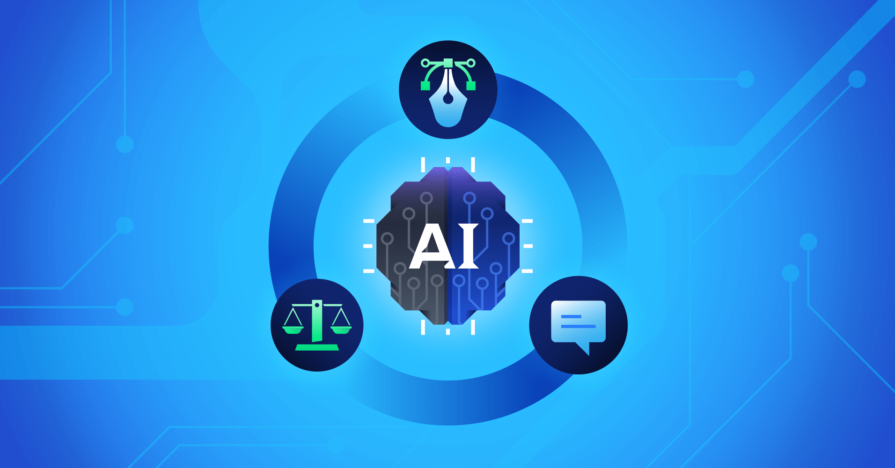
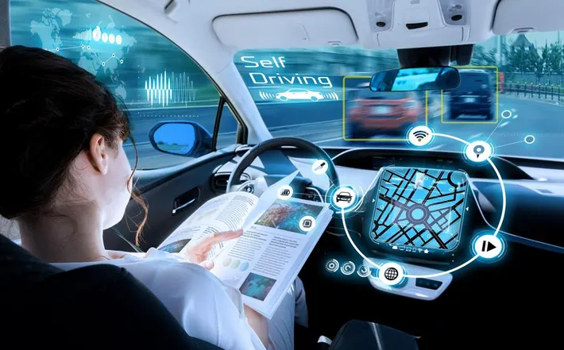

In the ever-accelerating realm of technology, there's one force that stands out, shaping the future like no other – Artificial Intelligence (AI). As we stand on the threshold of 2025, it's the perfect juncture to embark on a journey into the AI of tomorrow. In this blog post, we invite you to join us as we explore the mesmerizing landscape of AI, delving into the trends, breakthroughs, and visionary projections that will redefine our world.
⇨ Continued Growth in Deep Learning
Deep learning, the wizardry within machine learning, has been the cornerstone of AI's meteoric rise. As we venture into 2025, deep learning is poised to reach new heights, promising remarkable improvements across several fronts.
↬ Image and Speech Recognition :
Deep learning will continue its magic, enhancing image and speech recognition to perfection. This means smarter voice assistants and facial recognition systems. Think of Google's BERT model, which already brought natural language understanding to a new level, and imagine where it's headed next.
↬ Natural Language Processing (NLP) :
NLP is on a relentless journey of enhancement. In 2025, expect chatbots that can chat like humans, translations that are nothing short of miraculous, and AI that understands the subtleties of human language. GPT-4, the heir to GPT-3, is poised to redefine NLP, creating more natural interactions with AI.
⇨ AI in Healthcare : A Revolution in Diagnosis and Treatment
The field of healthcare is undergoing a seismic transformation thanks to AI. In 2025, AI's role in healthcare will be nothing short of revolutionary.
↬ Diagnostics :
Picture AI-powered diagnostic tools that continue to evolve, delivering swift and precise disease identification. AI's ability to analyze medical images will be a game-changer in early cancer detection, radiology, and pathology. Startups like PathAI are leading the charge to improve diagnostic accuracy.
↬ Drug Discovery :
AI algorithms will be the driving force behind faster drug discovery processes. They will predict potential compounds for new medications, significantly reducing development time and costs. Companies like BenevolentAI and Atomwise are already wielding AI to discover groundbreaking drug candidates.
↬ Patient Care :
AI-driven robotics and telemedicine will elevate patient care to unprecedented levels. With the power to monitor chronic conditions and assist healthcare professionals, AI will save lives and reduce healthcare costs. IBM's Watson Health, for example, is aiding doctors in making data-informed decisions.
⇨ The Ethical AI Debate
As AI embeds itself into our lives, ethical concerns rise to the surface. In 2025, these concerns will be front and center.
↬ Bias and Fairness :
The discussion about AI bias, fairness, and equity will intensify. Society will make it a top priority to ensure that AI systems don't perpetuate or worsen existing inequalities. Initiatives like AI fairness tools and guidelines from the AI Ethics Impact Group will be instrumental in addressing these concerns.

↬ Transparency and Accountability :
Calls for transparency in AI decision-making will grow louder. There will be a need to hold AI developers and operators accountable for the outcomes of AI systems. Initiatives like OpenAI's GPT-3 usage policies and audits will underscore the commitment to transparency.
⇨ AI in Autonomous Vehicles and Transportation
The dream of autonomous vehicles has been in the making for years, and 2025 is the year they shine.
↬ Self-Driving Cars :
Self-driving cars will become a common sight, promising improved safety, reduced traffic congestion, and increased accessibility, particularly for individuals with disabilities. Tesla's Full Self-Driving (FSD) beta and Waymo's commercial self-driving service are pioneering the way.

↬ Safety and Regulation :
: Ensuring the safety of self-driving cars will be a top priority. Regulations will evolve to accommodate this new mode of transportation. The National Highway Traffic Safety Administration (NHTSA) in the U.S. is actively engaged in shaping regulations for autonomous vehicles.
⇨ AI in Business : The Automation Revolution
AI is poised to revolutionize various facets of the business world, and automation will take center stage.
↬ Customer Service :
AI-driven chatbots and virtual assistants will handle a substantial portion of customer service inquiries. They will provide quick responses and enhance customer satisfaction. Zendesk's Answer Bot and IBM Watson Assistant are leading the transformation in customer service.
↬ Data Analytics :
Businesses will harness AI for data analysis, enabling them to identify trends, make data-driven decisions, and boost operational efficiency. Amazon Web Services (AWS) offers a suite of AI-powered analytics tools, making data a goldmine for businesses.
↬ Workforce Dynamics :
The widespread adoption of AI will reshape the job market. Some roles will be automated, while others will be enhanced by AI tools. Upskilling and adaptation will be the key for both employees and employers. Organizations like Coursera and edX offer a plethora of AI-related courses, facilitating this transformation.
⇨ Quantum Computing and AI : A Match Made in the Future
Quantum computing, a revolutionary paradigm in computing, holds the potential to supercharge AI algorithms. 2025 is the year of the grand convergence of quantum computing and AI.

↬ Complex Problem Solving :
Quantum computing's unparalleled ability to process vast amounts of data and solve complex problems will find applications in cryptography, materials science, and drug discovery. IBM and Google are at the forefront of quantum computing research, opening new doors for AI.
↬ Security and Cryptography :
Quantum computing poses a challenge to existing encryption methods, necessitating the development of quantum-resistant cryptographic techniques. The National Institute of Standards and Technology (NIST) is actively working on post-quantum cryptography standards to keep our digital world secure.
⇨ AI and Climate Change Mitigation
The year 2025 will bring even greater emphasis on AI's role in addressing environmental challenges, with a primary focus on mitigating climate change.
↬ Climate Modeling :
AI-driven climate models will provide more accurate predictions, aiding in climate change mitigation and adaptation efforts. The European Centre for Medium-Range Weather Forecasts (ECMWF) is incorporating AI into its climate models, giving us a clearer picture of our planet's future.
↬ Resource Management :
AI will optimize resource allocation in areas such as agriculture, energy distribution, and water conservation, fostering sustainability. Companies like Indigo Agriculture are using AI to enhance crop productivity while minimizing resource use, contributing to a greener and more sustainable world.
⇨ Final Thoughts
As we approach the cusp of 2025, the future of AI holds tremendous promise. It will be a driving force of innovation, reshaping the way we work, live, and interact with the world. Embracing AI's potential while remaining vigilant about its impact on our society and values will be a pivotal endeavor. The path to 2025 promises to be a transformative and ethically nuanced journey, guided by our collective wisdom and vision for a better future.